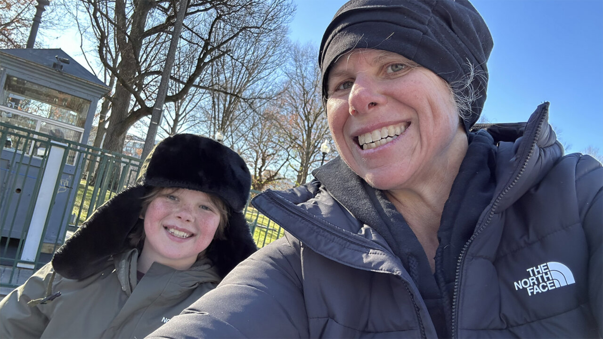
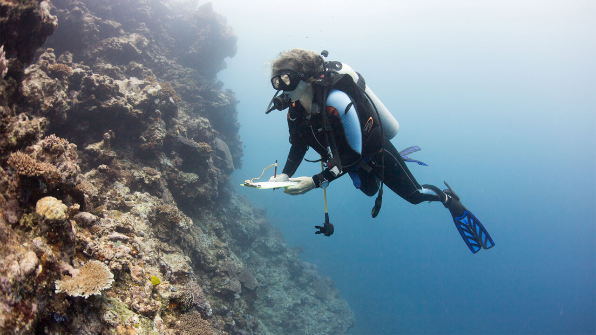
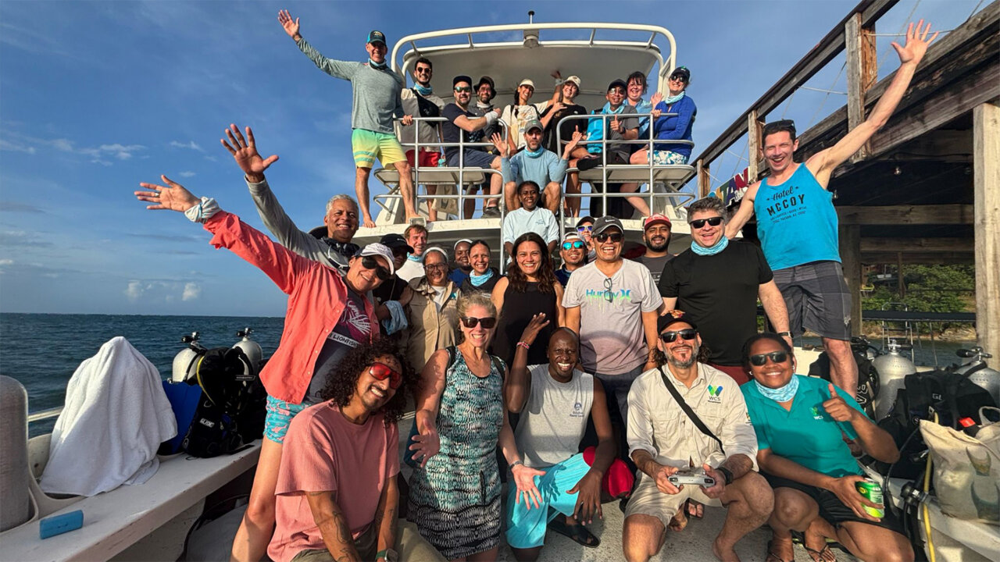
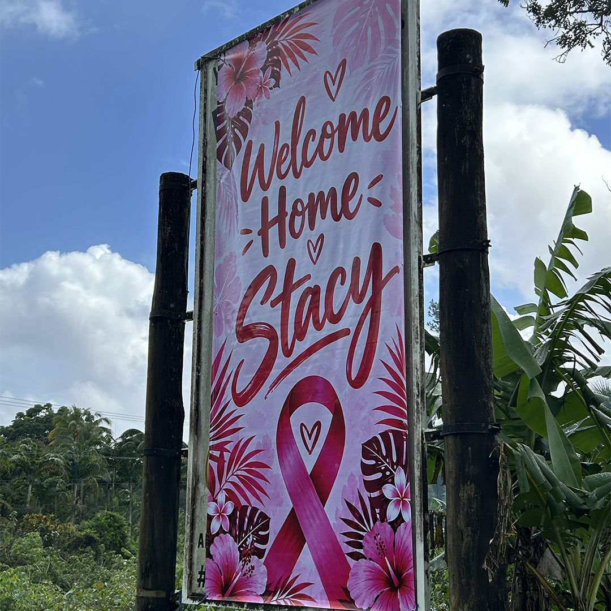

I’ve spent my whole career dedicated to ocean conservation. I never knew that there would come a time when ocean conservation would be life support for me. In September 2025, I was blindsided by a breast cancer diagnosis. I had no symptoms. A routine mammogram led to more tests, which revealed something unexpected. I had no detectable primary tumor in my breast, but the cancer had already spread to several lymph nodes. In an instant, my life was turned upside down. I received my diagnosis while on holidays in Florida with my son to visit his American grandparents. I ended up coming back to my roots in the Boston area to seek treatment at Mass General Brigham, given their world-class reputation for cancer care.

Grinning and bearing through the cold Boston winter by engaging in some outdoor activities, like teaching her son ice skating. Photo courtesy Stacy Jupiter.
While I grew up in the suburbs west of Boston and completed my undergraduate degree at Harvard, after nearly three decades away mainly living abroad, I felt like a stranger in my hometown. My husband rushed from our home in Fiji to be by my side, but because he is neither an American citizen nor permanent resident, he could not stay indefinitely. Faced with months of treatment, we made the hard decision for him and our son to return to Fiji so our son could go back to school surrounded by familiar people and routines. Living solo while undergoing a clinical trial, surgery, chemotherapy and radiation, I needed to stay busy to distract myself from the heartache of being separated from my family and the fear of uncertain outcomes. On the days that were not filled with medical appointments or fatigue, I threw myself into work. Why? Because, like me, our oceans are sick.

To get through her treatments, Stacy often pictured being back in her happy place underwater. Photo credit: Emily Darling ©️WCS.
Seventy-five years ago, Rachel Carson captivated the world with The Sea Around Us, revealing mysteries of the oceans that were still largely unexplored. In later editions, she warned of the growing threats humans posed to marine ecosystems, including radioactive contamination from nuclear testing. She intended to write another book about rising seas and warming oceans, but breast cancer took her life before she could start. I wonder what she would think if she saw today’s oceans. Less than two-thirds of the world’s fisheries are harvested sustainably. More than one third of all shark and ray species are threatened with extinction. Millions of tons of plastic enter the ocean every year. It’s easy to look at these trends and feel overwhelmed. I don’t.

Prior to her diagnosis, Stacy participated in a strategic planning session in Honduras with WCS marine staff from around the globe. Photo courtesy Stacy Jupiter.
Throughout chemotherapy and immunotherapy, I continued refining a global strategy to strengthen ocean resilience. I found myself placing the same faith in innovative conservation that I place in modern medicine. Both have advanced remarkably since Rachel Carson’s time. Both offer hope. But both depend on acting before it’s too late. I oversee a vast array of ocean conservation programs for the Wildlife Conservation Society, the world’s largest field-based global conservation organization. Our marine teams operating in over 26 countries are busy, working alongside governments and local communities to implement the strategy.
We recently identified a global portfolio of coral reefs more likely to persist through climate change and helped governments commit to protecting them. We supported delivery of landmark protections for more than 70 species of endangered sharks and rays. Since 2016, we’ve helped establish more than 80 marine protected and conserved areas covering nearly 600,000 square kilometers of ocean. Those achievements remind me that large, complex problems are solved one decision and one action at a time. Cancer has taught me the same lesson. I can’t control every outcome. Neither can we control everything happening in the ocean. But we can control how we respond.

A warm welcome for Stacy back to Fiji, in time for Pinktober events to raise awareness of breast cancer. Photo courtesy Stacy Jupiter.
I exercise to build my body’s resilience. I pay attention to nutrition. I take advantage of every treatment on offer. In the same way, we can strengthen the resilience of our oceans through smart conservation, better policies, and collective action. These are acts of hope. There is no test that can predict exactly what the future holds, for me or for the ocean. But both journeys have taught me that uncertainty is not the same as helplessness. There is still much within our control. And sometimes, choosing to act is the most powerful form of hope we have.